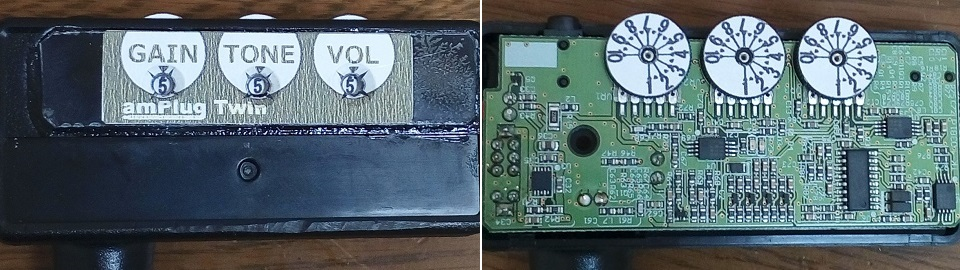
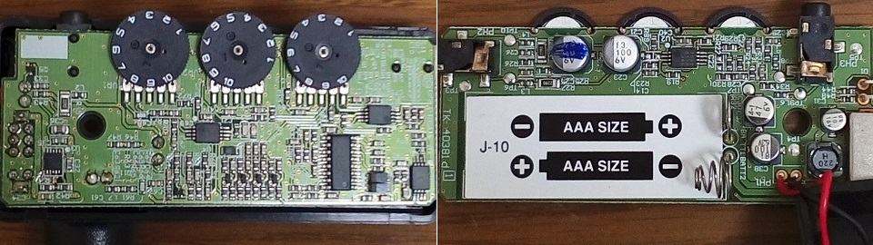
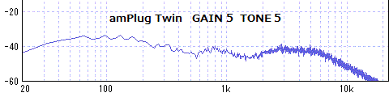

amPlug Twin 改造
2016年04月02日 カテゴリー：ヘッドフォンアンプ・その他アンプ

エレキギターを弾くときは主にamPlug Twinを使っていますが、ポットがダイヤルで数字が小さくわかりにくいため、見た目を改造しました。ダイヤルにシールを貼り、本体に穴を開けて見やすくしただけです。まぁそんなに厳密に値を設定するわけではありませんが、なんとなく安心です。補強のため表面にプラスチック板を貼り付けています。
シールを貼る前の内部写真です。

表面実装のチップ部品なので回路をいじるのは無理そうです。ICは下記のようなものが使われています。
NJU7082：パワーアンプ
NJM2115：汎用オペアンプ
PT2399：デジタルディレイ・エコー（コーラスエフェクト用）
NJM062：低消費電力オペアンプ（コーラスエフェクトのLFO用）
10ピンのICもあったのですが素性がわかりませんでした。
ついでに周波数特性も調べました。

単なるドンシャリではなく中域が少し盛り上がっています。ギター用ヘッドフォンアンプを作るとき参考になりそうです。